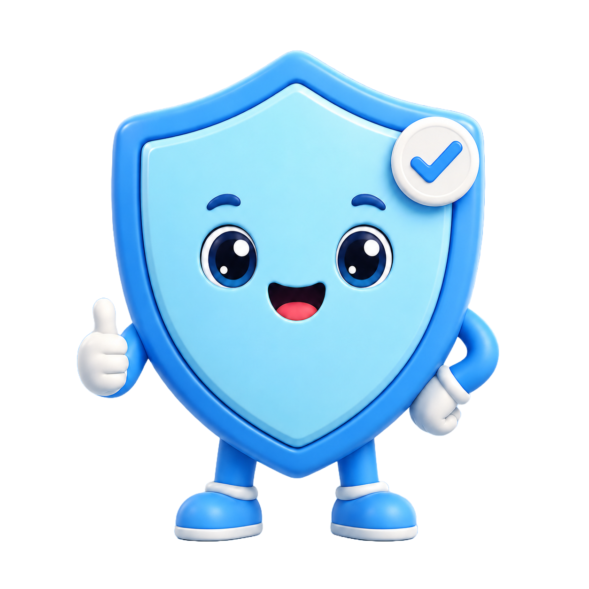

YouTube time's up!
You've used today's YouTube allowance.
Ask your Dom nicely if you need more watch time — or come back tomorrow when the clock resets.
This tab stays on Guardi's page until your daily YouTube time resets.
Take me somewhere safe